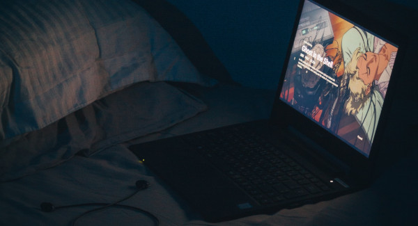
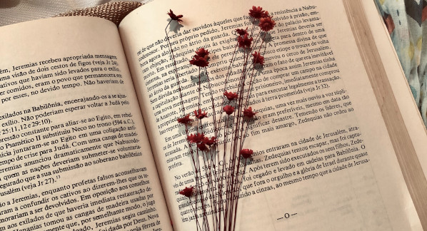

“Um livro pode ser queimado ou perdido, mas se você realmente absorve o que existe nele, o livro se torna parte de você e o conhecimento o acompanhará até o fim da vida” — Noa Gordon.
A decisão de criar este projeto, que é um teste, foi tomada por mim em uma manhã de domingo, sem qualquer apoio de familiares ou amigos ou absolutamente ninguém. Quero deixar claro a todos que passarem por aqui que este é um projeto de autoria de uma garota que talvez não esteja em pleno uso de suas faculdades mentais.
Não sou formada em nenhuma faculdade ou curso que poderia me dar o poder de escrever resenhas de livros ou filmes e, mesmo assim, estou aqui fazendo isso. Pretendo ser sincera em minha opinião, mesmo que esta não valha muito. Se por acaso minhas palavras ofenderem-o, pode vir até mim por alguma forma de contato e me tacar o pau sem dó.